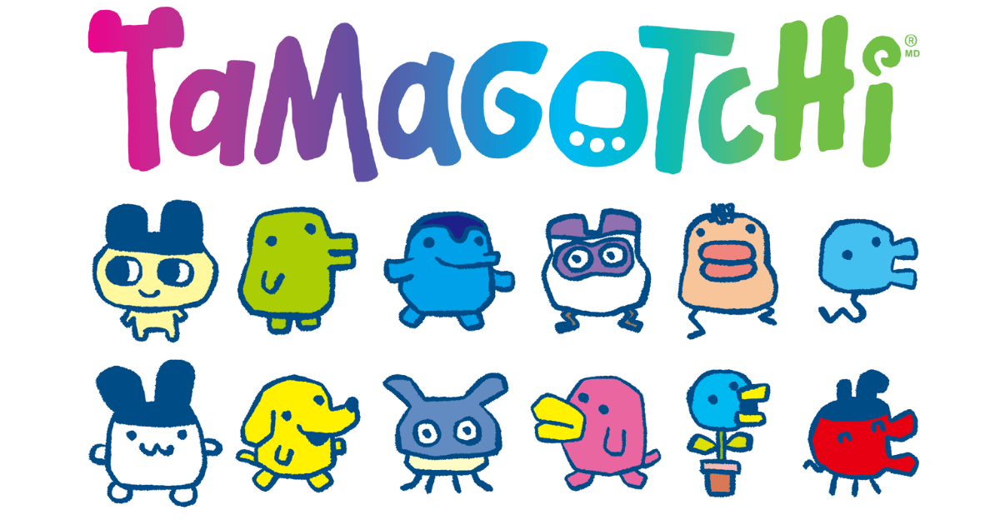
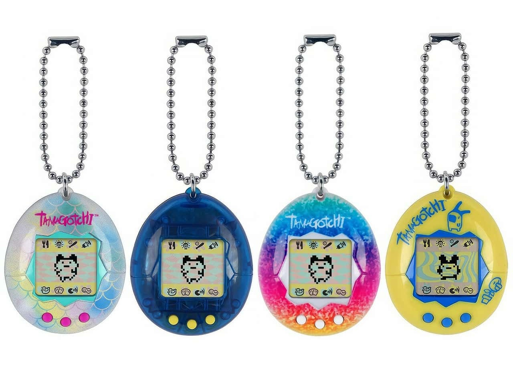
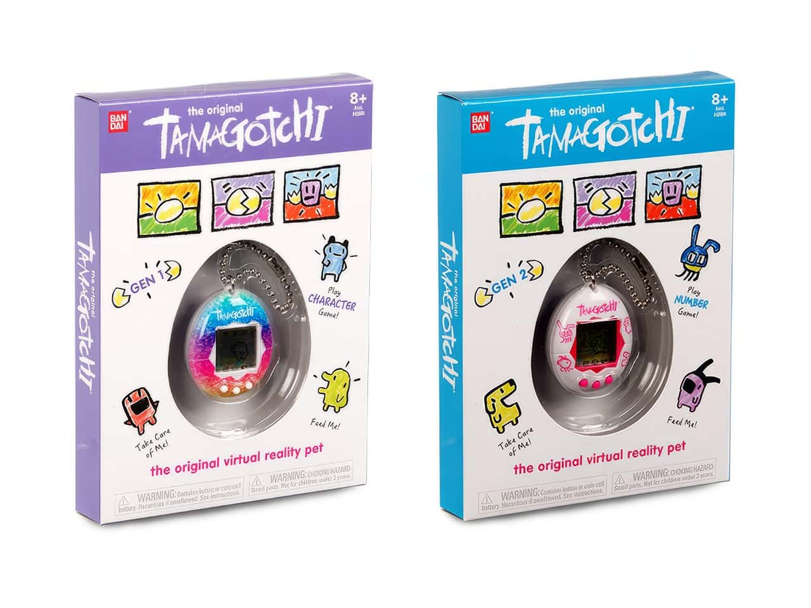
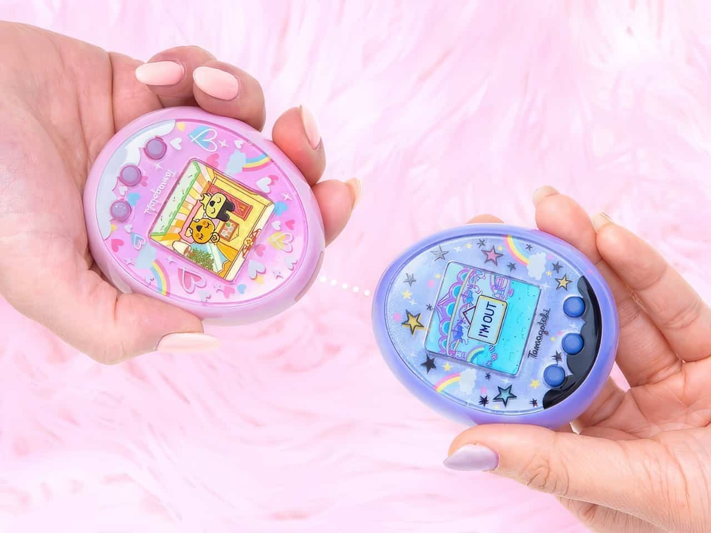

What is a Tamagotchi?
Tamagotchi is a portable digital pet game that involves taking care of a virtual pet by monitoring its happiness, health, and more. Tamagotchi owners will need to regularly check their pet's stats, feed them, take care of their hygiene, and train them to learn new skills.
The word "Tamagotchi" combinines the two Japanese words tamago (たまご) and uotchi (ウオッチ), meaning "egg" and "watch" respectively.
History of Tamagotchi
Created by Akihiro Yokoi of WiZ and Aki Maita of Bandai, Tamagotchis first released in Japan in 1996, before releasing in the U.S. in 1997 and quickly gaining popularity. Tamagotchi has gone through three different eras since its 1996 release; the Vintage Era (1996-1998), Connection Era (2004-2015), and Color Era (2008-present).
VINTAGE ERA (1996-1998)
The Vintage Era of Tamagotchi began when they first released in 1996 in Japan. Tamagotchis from this era were more basic compared to their more modern counterparts, featuring a black and white screen, and limited gameplay mechanics, giving Tamagotchi owners a high sense of responsibility to take care of their virtual pet. The popularity of Tamagotchi even led to the animated adaptation "Anime TV de Hakken! Tamagotchi", that aired from 1997-1998. Tamagotchi was so successful and led to such a cultural revolution that they even got banned in schools across Europe and North America in 1997 for being so distracting to students and disrupting classes.
CONNECTION ERA (2004-2015)
The Connection Era of Tamagotchi brought many new innovations and features to the franchise, like introducing connectivity of Tamagotchis to other Tamagotchi devices to unlock additional content.
COLOR ERA (2008-PRESENT)
The Color Era of Tamagotchi, as its name suggests, features colored screens. Tamagotchis of this era also introduced more complex ways to interact with its virtual pet. In this era alone, there are over 1000 Tamagotchi characters.
